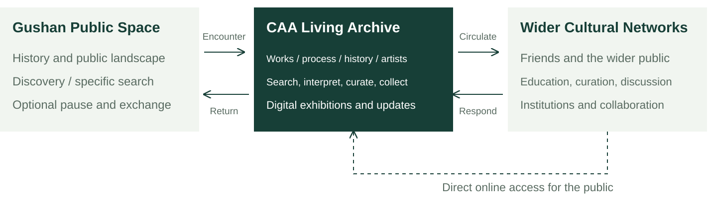
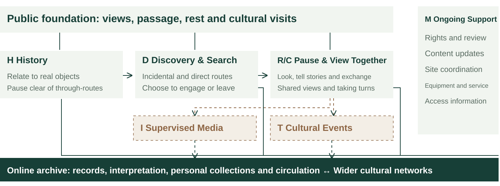
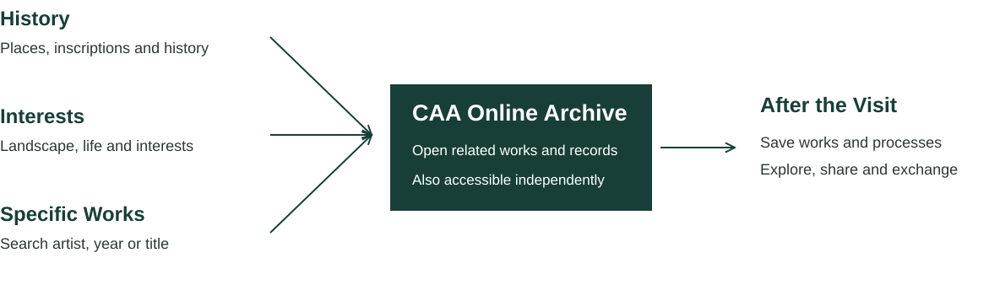

China Academy of Art · Graduation Design 2027 · Ye Yunhe 3221305839 · 23 Oct 2026 · v0.4
CAA Works Archive & Gushan Public Space
This website follows the graduation design project from early research, cultural communication goals, team studies and site analysis through user needs, functional frameworks, spatial design, concept models, design iterations and final outcomes. It currently presents completed research and will develop with the project.
Preserve graduation works and creative processes, create a place at Gushan where the public can encounter CAA's artistic culture, and sustain exchange and circulation through an online works archive.
The project aims to sustain the public circulation of CAA's artistic culture. Works, inspiration, research and sketches form its content; Gushan connects the academy's origins with public life; the online archive supports full records, continued access and wider public engagement.
On site:Retain views, walking and rest, prioritising historical understanding, discovering works and opportunities to pause and talk.
Online:Gradually collect works and processes, supporting search, interpretation, themed collections, personal collections and educational use.
Current stage:A user and functional framework has been developed. The specific site boundaries, architectural form and technical deployment remain open.
Dongtian and digital graduation exhibitions already offer online display channels. This project explores the connections between a historic site, creative process archives and public cultural communication.
Water and the lakeside terrace at Autumn Moon over the Calm Lake. Photograph by Dong Xuming, published in a 2023 report; not a survey of the site in 2026. Image source
Sharing CAA's artistic culture is the goal; the archive and spatial interaction are the means.
Reach, understanding, circulation and social connection are four intended contributions. Each can occur independently; their actual impact requires observation and evaluation.
Team Research
YT
The continuation of ideas, unfinished works, artists' development and the circulation of art between people.
WC
Creative trajectories, sketches and processes, possibilities for bringing works into physical space, and virtual displays of past graduation works.
ZZY
Public issues in the city as entry points, public responses, connections between online and on-site experiences, and feedback to artists.
YYH
An archive of past works and processes, Gushan's historic site, VR/AI-assisted experiences and spatial connections.
Gushan: History and the Present Site
The National Academy of Art was founded at Luoyuan on Gushan. Traces of the academy's history remain alongside landscapes and cultural facilities in ongoing use. Site research begins by understanding both before considering new functions.
The Early Campus Gate and WallSource caption: 1928; published in 2018. Records the early gate's appearance, without establishing today's campus boundaries.SourceWaterfront Buildings at Hardoon Garden (Luoyuan)Source caption: 1930s; published in 2018. A historical architectural image; no identification with a surviving building is assumed.SourceStudents Sketching at GushanSource caption: 1930s; published in 2018. Records the relationship between teaching and the landscape.Source
The gate, lakeside buildings and outdoor sketching place the academy's history in a tangible setting. These records can help the public understand how artists studied and worked here. Connections between contemporary works and Gushan still require documentary support.
Historical Group Photographs and Return Visits
Staff and Students at Luoyuan, Gushan — DetailThis source dates the photograph to 1928; published in 2018. An official republication captions it as 1929; the discrepancy is retained.SourceReturning to Gushan in 2018 — DetailSource caption: 2018. An academy-organised return visit, rather than evidence of a general demand among graduates to return.Source
The photographs compare memories of the site; they are not a precise survey from matching viewpoints. For the differing date, seethe 1929 caption in CAA's republication. CAA's 2018 report documents the visit but does not establish users' willingness to use a digital works archive.
The Academy Name Stone and West Lake Art MuseumImage published in 2018; the date taken has not been independently verified. Shows proximity, without establishing dimensions, boundaries or permission for use in 2026.Source
Traces of the Academy's History Still Visible Today
A stone bearing the academy's historic name stands at Gushan. CAA's account distinguishes the original stone carved in 1929, now held at the Nanshan campus history museum, from other stones bearing the same inscription. The 2003 recarving date at Nanshan should not be assigned to the Gushan stone.
Zhejiang University Archives records the survival of Hutian Yibi Tower. Its current use, accessible areas and the precise correspondence between historic Luoyuan and the present site remain to be verified.
Existing Courtyards, Pavilions and Cultural Facilities
Images from earlier reports help identify spatial types. Courtyards, covered walkways and museum grounds already serve viewing, rest and cultural visits; their availability for this project has not been established.
Courtyard Moon Gate and Covered WalkwayReport dated 5 August 2023; original caption: Yushu Tower. Shows the entrance and inside–outside relationships; current access and rules for staying require verification.Source: Tide News; photograph by Dong XumingYuebo PavilionImage in a report dated 5 August 2023. Shows the lakeside pavilion and its views, without implying permission to install experience facilities.Source: Tide News; photograph by Dong XumingEntrance to Zhejiang Provincial Museum, Gushan BranchReport dated 21 May 2020; the date taken has not been independently verified. This is not the entrance to West Lake Art Museum and does not establish access conditions in 2026.Source: Zhejiang Online
Existing landscape, passage, rest and cultural visits form the foundation of the spatial design.
Existing Functions
Lakeside views, walking, photography and rest.
Visits to art museums and other cultural venues.
Historical commemoration, inscriptions and cultural recognition.
A public service station and existing cultural activities.
Digital interpretation initiatives already exist; current operation and effectiveness require verification.
Conditions for Spatial Use
New content must retain normal passage, shared views and places to rest.
Existing buildings, pavilions and service stations are not automatically available to the project.
Historic boundaries do not establish current land-use or development boundaries.
Reports of some gallery closures in August 2026 cannot replace a current venue-by-venue check.
Permissions for the site, facilities and content need to be secured separately.
Historic Luoyuan does not define land currently available for development. Differences between the 1956/1959 historical accounts and the 1928/1929 photograph captions are retained. Site photographs support recognition; current access and available areas require separate checks.
User Needs
Users include passers-by as well as graduates and creators looking for particular works. The six roles can overlap; one person may move between a brief encounter, close reading and shared discussion.
User
Initial Purpose
Work Sought
Behaviours to Support
Spatial Needs
A General Visitors
Walking by the lake, photography, rest
Usually unspecified
Discover voluntarily, or choose not to participate
Clear routes and views; easy exit
B Cultural Visitors
Exhibitions and history
From broad to specific
Recognise history; explore themes
Compare with real objects; pause briefly
C Past Graduates
Return and show works to others
Specific artist or work
Find quickly, tell stories and share
View together with companions
D Companions
Accompany someone; understand their work
Emerges through conversation
Look, listen, point and offer interpretations
Shared sightlines and space to talk
E Students and Creators
Learning, research, inspiration
Defined themes or sources
Search, compare processes, maintain records
Reading conditions; detailed searches can happen elsewhere
F Content and Operations Teams
Communication, services, management
Defined by responsibilities
Review, update, maintain and collaborate
Clear responsibilities and service conditions
Functional priorities distinguish between:
Baseline public use:People who do not engage with digital content can still walk, enjoy views, rest and visit cultural venues.
Experience benefits:Assess practical benefits through incidental discovery, specific searches, personal understanding and shared viewing.
Operational requirements:The academy's content team, site managers and maintenance providers need distinct responsibilities; these are essential requirements.
Specific motivations, interaction preferences and sustained participation are research hypotheses, not survey or interview findings. Mobility, hearing, vision, language and whether someone visits with others affect all roles.
Continued engagement also depends on content and ongoing relationships:
General visitors:A personally relevant work and further material to explore can give visitors a reason to return online.
Cultural visitors:Clear historical information, themes that can be explored further and reliable sources.
Graduates and companions:Find works and understand their processes, with opportunities to continue telling, updating and responding.
Students and creators:Complete records, clear citation information and relevant themes provide practical learning value.
Operators:Stable responsibilities, content and resources enable continued updating and maintenance.
Spatial Framework
The site prioritises historical understanding and discovering art. Reading, shared viewing and conversation require suitable places to pause. Deeper media experiences and events depend on site and management conditions. The online archive shares content with the site while remaining independently accessible.
Gushan will not permanently display every past graduation work in physical form.

Relationships between Gushan, the online works archive and wider cultural networks. People can access the archive online without first visiting Gushan.
Functional Framework
Level
Main Task
On-site Role
Online Role and Current Direction
F0 Public Foundation
Preserve existing public life
Views, passage, rest, cultural visits and equitable access
Functions independently of digital participation
F1 Historical Understanding
Understand CAA's origins
Recognise real objects; compare the site with historical records
Extend into historical archives; a priority for development
F2 Discovering Art
Incidental discovery or direct search
Optional entry points, previews and ways to find works
Thematic discovery and specific searches; a priority for development
F3 Understanding and Exchange
Understand ideas and creative choices
Places to pause, view together and talk
Full processes, artists' accounts and responses; assess the added value of being on site
F4 In-depth Experiences
Specific media and cultural events
F4a supervised media; F4b themed events
Virtual content accessible independently; on-site deployment is conditional
F5 Cultural Circulation
Bring content into wider society
Public exchange, events and cultural encounters
Story sharing, themes, educational citation and collaboration; essential support
M Operational Support
Sustain all functions
Responsibilities for site, equipment, access and maintenance
Collection, permissions, review, updates and feedback; essential conditions
F0–F5 and M describe functions, not seven rooms. F5 runs through all content and is supported primarily by the online archive and wider networks.
Spatial Relationships
Public visits:Maintain existing passage, views, rest and cultural visits.
History and discovery:Identify real objects, read brief information and reach specific works quickly.
Pausing and exchange:Support close looking, graduates' accounts, pointing and discussion among companions.
Conditional experiences:Check safety, environment, scheduling and service conditions separately for supervised media experiences and themed events.

Functional relationship diagram. Solid lines indicate core links; dashed lines indicate conditional links. It does not define site boundaries, rooms or a fixed visitor route.
Spatial Conditions
Behaviour
Body and Social Relationships
Environmental Needs
Design Approach
Walking and Viewing
Walking, stopping and photography without crowding each other
Continuous views and routes
Retain existing uses
Recognising History
Read information alongside real objects
Visible, readable, with room for a brief stop
Identify gaps in existing interpretation first
Incidental Discovery
Approach voluntarily and leave freely
Low disturbance; no compulsory queue
Direct access to specific content
Specific Search
A clear goal and quick confirmation
Avoid monopolising a shared public interface
Support personal access alongside suitable shared interfaces
Close Reading
Alternate sitting and standing; zoom and compare
Readable details and controlled glare
Use places where people can pause
Shared Viewing
See together, point, talk and take turns
Equitable access without blocking others
Compare media before choosing a large screen
Supervised Media Experiences
Wearing equipment, waiting, handover and exit
Safety boundaries and management support
Deploy only when conditions are met
Cultural Events
Gathering, speaking, setup, removal and restoration
Compatible sound levels and scheduling
Work within approved conditions of use
Shared viewing depends on seeing the same content, pointing things out, taking turns and talking. Large screens, synchronised phones and fixed headset rooms remain options to assess. Areas and viewing distances await measurement.
Forms of Intervention
Criterion
A Integrate Existing Facilities
B Light-touch Adaptation of Existing Spaces
C Independent Reversible Structures
Supported Behaviours
Recognising history, brief discovery and quick access
Pausing, reading, conversation and conditional experiences
Meet a clearly identified need not otherwise supported
Public Use
Existing facilities may already be at capacity
Confirm existing uses and times available for sharing
Installation and visitor activity must retain clear passage
Historic Objects
Attachments may affect fabric and interpretation
Both use and adaptation require coordination
Independent reversible structures can still affect the landscape and ground conditions
Maintenance Needs
Content updates and checks of physical displays
Environment, cleaning, equipment and staff
Maintenance, storage, repair and removal
Permission for Use
Secure consent for both facilities and content
Check spatial, management and access conditions
Define installation, management and restoration requirements
Reversibility
Assess the specific attachment method
Even a small adaptation may be difficult to reverse
Restorability is a design aim that still needs demonstration
Current Direction
First check whether existing facilities can meet the need
Investigate conditions for pausing and exchange
Develop only where A/B cannot support a necessary behaviour
The three approaches can be combined. Attachments to existing facilities may affect historic fabric; independent reversible structures can affect the landscape and ground. Risk cannot be ranked simply by how much is added.
Functional Conflicts
The matrix compares competition between two activities within limited space or time. Conflict: needs resolution first. Coordination: can coexist under suitable conditions. Compatible: no obvious inherent conflict. These are design hypotheses to be calibrated against field evidence.
P Passage
V Views
H History
D Search
R Reading
C Co-viewing
I Immersion
T Events
M Maintenance
P Passage
—
Coordinate
Coordinate
Coordinate
Conflict
Conflict
Conflict
Conflict
Coordinate
V Views
Coordinate
—
Compatible
Coordinate
Coordinate
Coordinate
Conflict
Conflict
Coordinate
H History
Coordinate
Compatible
—
Compatible
Compatible
Coordinate
Coordinate
Coordinate
Coordinate
D Search
Coordinate
Coordinate
Compatible
—
Coordinate
Coordinate
Conflict
Coordinate
Coordinate
R Reading
Conflict
Coordinate
Compatible
Coordinate
—
Coordinate
Coordinate
Conflict
Coordinate
C Co-viewing
Conflict
Coordinate
Coordinate
Coordinate
Coordinate
—
Coordinate
Coordinate
Coordinate
I Immersion
Conflict
Conflict
Coordinate
Conflict
Coordinate
Coordinate
—
Conflict
Coordinate
T Events
Conflict
Conflict
Coordinate
Coordinate
Conflict
Coordinate
Conflict
—
Coordinate
M Maintenance
Coordinate
Coordinate
Coordinate
Coordinate
Coordinate
Coordinate
Coordinate
Coordinate
—
P Passage
Passage
V Views and Rest
View
H Recognising History
History
D Discovery and Search
Discovery
R Individual Reading
Reading
C Shared Viewing
Co-viewing
I Supervised Immersion
Immersion
T Themed Events
Thematic Activity
M Operations and Maintenance
Maintenance
Extended reading, storytelling and waiting should take place outside continuous routes.
Digital interfaces require checks for glare, brightness, gathering and orientation.
Headset experiences require arrangements for handover, exit, safety and management.
Themed events need coordination with existing uses, including sound, setup, removal and restoration.
Interaction and Case Studies
History, interests and specific searches offer parallel entry points. Graduates can find archived works directly; passers-by can begin with a place or an interest. Saving and returning are optional.

Three entry points lead to the same archive, with the option to continue after leaving. This is not a compulsory sequence and does not prescribe an on-site device.
AI-assisted interpretation, comparisons of creative decisions, shared viewing and VR can be developed where relevant.
Hello Lamp Post
Place-based entry. Bristol project, 2013.
How It Works
Use identifiers on existing public objects to start a conversation by text message.
Relevance Here
A place can provide an entry point to content without a separate physical display for every work.
Requirements
Identifiable objects, a real connection to place and an ongoing content service.
Limitations
The precedent does not imply permission to attach devices to historic objects, nor a need to reproduce personified dialogue.
Hello Lamp Post: identifiers on existing public objects become entry points for text-message interaction. Image source
Send Me SFMOMA
Interest-led Discovery
How It Works
Send a keyword, colour or emoji to receive a related work and its caption.
Relevance Here
Begin with a public interest and one specific work, rather than a large catalogue.
Requirements
Searchable records and meaningful links between themes and works.
Limitations
A historical service launched in 2017 and discontinued in 2020. Its messaging infrastructure and visitor figures are not adopted as this project's model or evidence of impact.
Saving and Returning. Image from the museum's historical project.
How It Works
Touch a label with the pen to save content; retrieve the visit record after leaving using a ticket code.
Relevance Here
Save specific works, process excerpts and personal interpretations to give later visits a clear focus.
Requirements
Clear work identifiers, links to visit records and a way to retrieve them.
Limitations
The dedicated pen, handover and maintenance arrangements cannot simply be copied. The museum's use page states it is unavailable; the case is treated as a historical mechanism.
Work records encompass inspiration, process, outcomes and responses, connecting creative backgrounds, development and public exchange.
Each record retains the artist, year, discipline, theme, medium, version, source and permissions. Process materials are collected as available; coverage of all past works is not assumed from the outset. On-site content is retrieved as needed; access depends on records and permissions.
Current Findings
The project aims to sustain the public circulation of CAA's artistic culture, with archives of past works as its content foundation.
Gushan supports historical understanding and discovering art while retaining existing public uses.
The site will not permanently display all works; it prioritises conditions for brief stops, reading and shared exchange.
The online archive supports progressively accumulated records, continued access, thematic communication, educational use and social connections.
On-site VR, dedicated devices and independent structures require further evidence of value and manageability.
Questions to Verify
Condition to Verify
Evidence Needed
Decisions Affected
Boundaries, Management and Conservation
Actual available areas, responsible bodies and approval requirements
Whether existing interfaces, buildings or independent structures can be used
Existing Buildings and Access
Use, schedules and access conditions for each space
Whether space is available for pausing or in-depth experiences
Passage and Equitable Access
Clear widths, slopes, obstacles, waterside conditions and exit routes
Whether staying, waiting or services obstruct public use
Observed Staying and Companion Behaviours
Where people stop, stand, sit and talk
Demand for shared viewing and the conditions that matter most
Light, Sound and Facilities
Glare, rain protection, noise, connectivity, power and seating
Suitability for reading, audio, public interfaces and VR
Works and Process Materials
Available records, permissions, versions and completeness
Archive scope, AI interpretation and depth of experience
Operations and Continued Interest
Responsibilities, resources, update methods and willingness to participate
Whether maintenance is feasible and continued engagement has value